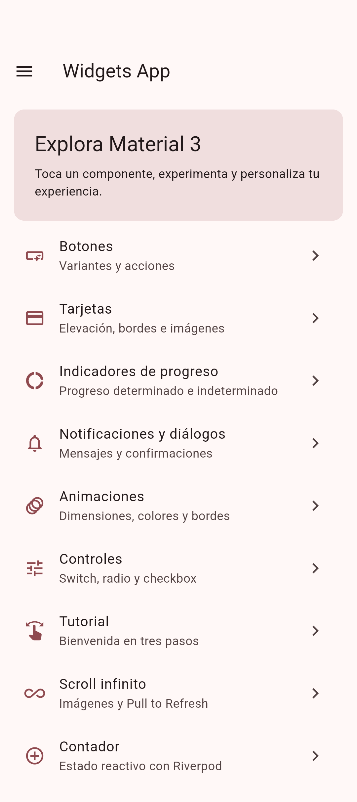
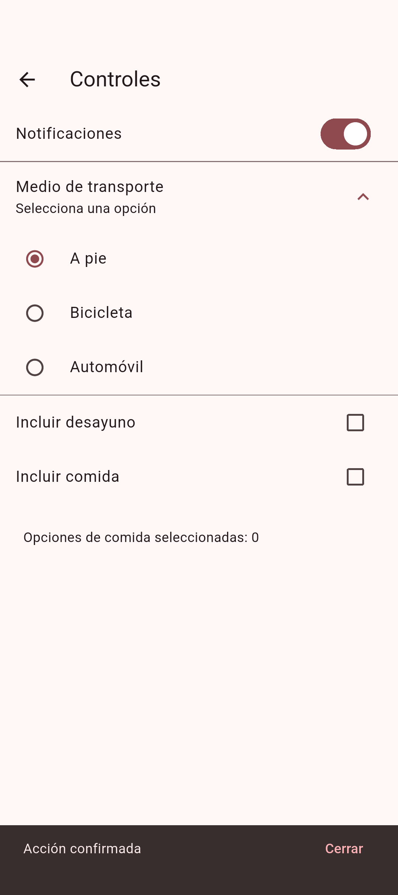
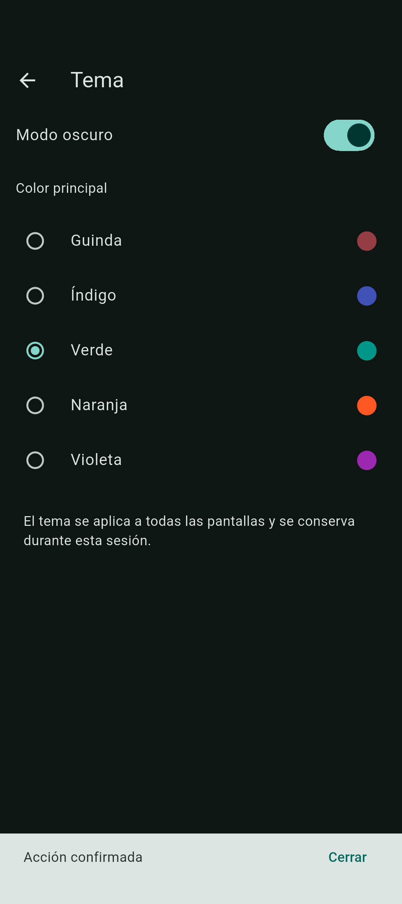

Diez demostraciones para explorar Material Design 3 con Flutter, GoRouter y Riverpod.
Abre un diagrama y selecciona sus componentes para consultar sus fuentes. Puedes explorar conexiones, cambiar el tema y ampliar el contenido.
La publicación en Appetize está pendiente. El APK de demostración se genera con el flujo de validación de GitHub Actions.


